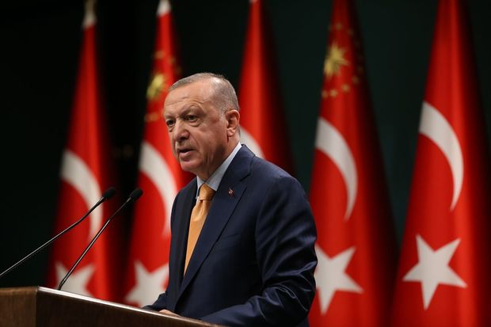
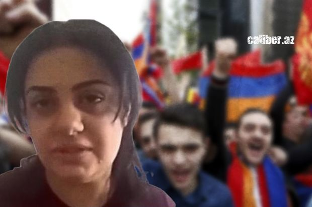

Ərdoğan: “Regionda real müharibə yaxşı əlamət deyil”
Türkiyə prezidenti Rəcəb Tayyib Ərdoğanın sədrliyilə ölkənin Nazirlər Kabinetinin iclası keçirilib.
İclasdan sonrakı mətbuat konfransında çıxış edən dövlət başçısı Rusiya-Ukrayna gərginliyinə də toxunub.
Ərdoğan regionda real müharibənin yaxşı əlamət olmadığını bildirib.
O, qeyd edib ki, artıq Ukrayna lideri Rusiya, Türkiyə və Ukrayna formatında üçtərəfli görüşə müsbət yanaşdığını bəyan edib.
“Rusiya prezidentinin də təklifə müsbət yanaşacağı təqdirdə tərəflərin İstanbul və ya Ankarada görüşü təşkil oluna bilər” , - deyə Ərdoğan vurğulayıb.

Polşa Prezidenti İlham Əliyevə zəng edib
Fevralın 16-da Polşa Respublikasının Prezidenti Andjey Duda Azərbaycan Respublikasının Prezidenti İlham Əliyevə zəng edib.
Söhbət zamanı Polşa Prezidenti 2019-cu ildə Azərbaycana rəsmi səfərini məmnunluqla xatırladı.
Prezident İlham Əliyev də bu səfərin uğurlu olduğunu, ikitərəfli əlaqələrimizin inkişafına töhfə verdiyini vurğuladı.
Telefon danışığı zamanı Azərbaycan ilə Polşa arasında müxtəlif sahələrdə ikitərəfli əlaqələrin inkişafına dair fikir mübadiləsi aparıldı.
Polşa Prezidenti ATƏT-in fəaliyyətdə olan sədri kimi Mərkəzi və Şərqi Avropa regionunda təhlükəsizlik məsələlərinə toxundu və ATƏT çərçivəsində atılan addımların gərginliyin azaldılmasına xidmət edəcəyini vurğuladı.
Söhbət əsnasında Ukrayna ətrafında cərəyan edən hadisələrə dair fikir mübadiləsi də aparıldı.

“Caliber”: Silnara Tovmasyan “azərbaycanlıya” və Ermənistanın düşməninə necə çevrildi? - VİDEO
Ermənistan cəmiyyətindəki antitürk və antiazərbaycan əhval-ruhiyyəsi heç kəs üçün sirr deyil. Lakin bu xəstəlik, az da olsa bəzi ermənilərdən yan keçib.
Bu barədə “Caliber”in növbəti süjetində bildirilib.
“İrəvan sakini Silnara Tovmasyanın bu yaxınlarda Azərbaycanın CBC telekanalına müsahibəsi yuxarıda deyilənlərin bariz sübutudur. O, nəinki təhqir, həm də hədə-qorxu və təhdid obyektinə çevrilib. Axı bu qadın erməni cəmiyyətinin millətçi təfəkkürlü hissəsini belə həyəcanlandıran nə deyib?”.